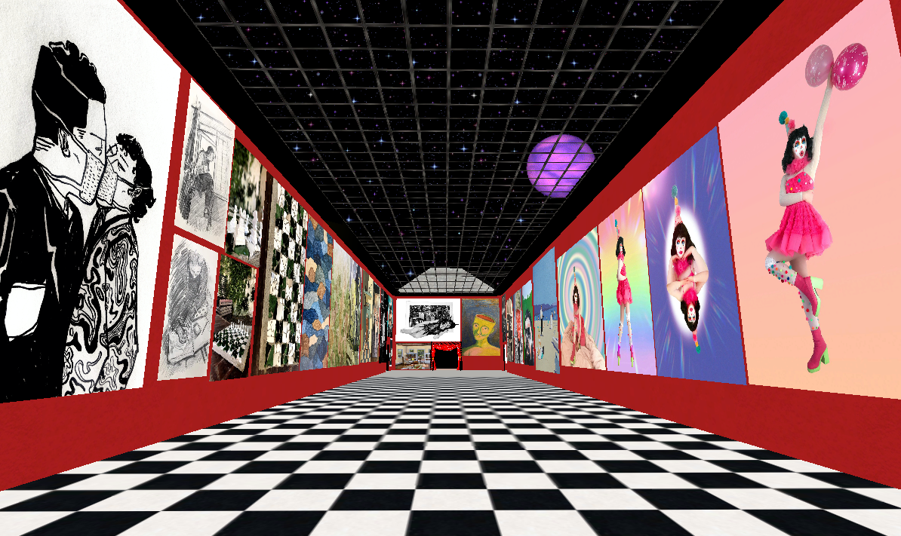
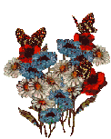
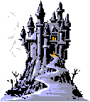
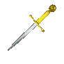
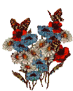
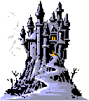
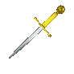

a glistening bridge appears before you....
GRIMM'S FAIRYLAND, 2022 Grimm's Fairyland was created by Sam Herle for New Art City Festival 2022. "'Grimm's Fairyland' is a self-portrait and self-reflection, generally focusing on the themes of isolation, comfort, fantasy, and a looming paranoia. In this show I've created a representation of my bedroom, occupied by simple 3D models and 3D scans of real objects from my own room and workspace. I hope it can be an intimate experience where the user can navigate my "room" and belongings, intruding on what should feel like a very personal space. There is also a 3D scan of myself at my desk, turned around as if aware of a presence in the room other than my own. I've also covered the walls of the bedroom in band posters and artwork that people submitted to me after I put out a call on my Instagram account, and most link to a website or social media from the artist or musician(s) (hover over the artwork for a link to each artist's social media or website). Enjoy! :-)"
QUEER DIGITAL INTIMACIES, 2021 Queer Digital Intimacies is a virtual art exhibition curated by Sol Cabrini, produced by Angelic Goldsky, and built by Sam Herle. This exhibition features 30+ artists and has been projected as an interactive installation at multiple venues and events, including the Buddies in Bad Times Theatre in Toronto.
CYBER WAREHOUSE, 2020 Cyber Warehouse is a virtual art gallery and exhibition space created by roommates Brodie Anderson-Pilon and Sam Herle during the initial 2020 lockdown, hosting shows that they curated as well as building exhibitions for pre-existing festivals and collectives, such as Unibrow Arts Festival. The fun and interactive landscape takes inspiration from early 2000s chat rooms and maximalist, early internet aesthetics. Cyber Warehouse was featured on the cover of Discorder Magazine's November/December 2020 issue, as well as in Exclaim! Magazine. 
ORBS ORBS ORBS, 2020 Orbs Orbs Orbs is an online sound installation exploring warmth and soundscape in an online environment. Explore a series of rooms filled with multicoloured orbs omitting various sounds in order to control the composition, or stand in one place and allow the orbs to move around you.


 




